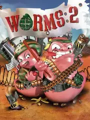

 |
|
| Tiempo de juego | 6m 10s |
| Última actividad | 9/1/2026 8:09:49 |
| Añadido | 17/11/2025 18:51:54 |
| Modificado | 10/12/2025 13:55:51 |
| Estado de finalización | Jugado |
| Librería | Playnite |
| Fuente | |
| Plataforma | PC (Windows) |
| Fecha de lanzamiento | 31/12/1997 |
| Puntuación de la Comunidad | 81 |
| Puntuación de la Crítica | |
| Puntuación de usuario | |
| Género | Platform Shooter Strategy |
| Desarrollador | Team17 |
| Editor | MicroProse Software, Inc. Team17 |
| Característica | Multiplayer Single Player |
| Enlaces | GOG Plus Mod 🌐Jugar Online |
| Tag | |
Worms 2 no fue solo un juego; fue el pilar que consolidó el género de la "estrategia de artillería" y se convirtió en el rey indiscutido del multijugador local (el famoso "Hot Seat" o "Asiento Caliente").
Es un juego de estrategia por turnos con una estética de dibujos animados, donde equipos de gusanos se enfrentan en escenarios 2D completamente destructibles.
El concepto es brillante en su simpleza: tienes un tiempo límite para mover a un gusano, seleccionar un arma de un arsenal absurdo y ejecutar tu ataque.
El verdadero salto cualitativo de Worms 2 fue la personalización total. El juego te permitía crear tu propio batallón de gusanos, dándote un control sin precedentes: podías nombrar a cada soldado, elegir su bandera, su baile de victoria y, lo más importante, su banco de voces. Además, la personalización de armas tiene un nivel de config muy volado, pudiendo jugar con artillería que roza lo delirante del daño que hace - se arman partidas tan hilarantes como nunca se podrán vivir en titulos posteriores...
Worms 2 es la mezcla perfecta de estrategia profunda y comedia absurda. Una obra maestra atemporal.
(Nota: Esta versión incluye el mod "W2-Plus", un parche de la comunidad que restaura el juego y garantiza su compatibilidad con sistemas operativos modernos.)